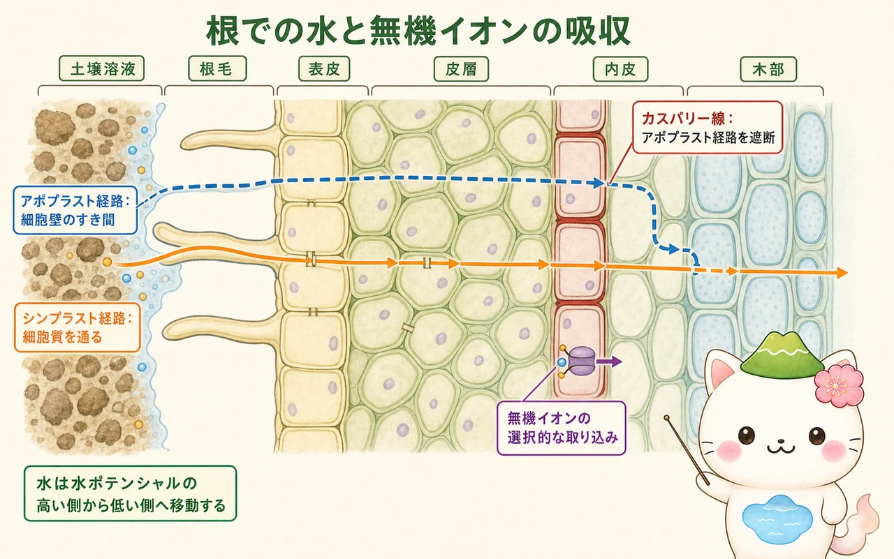
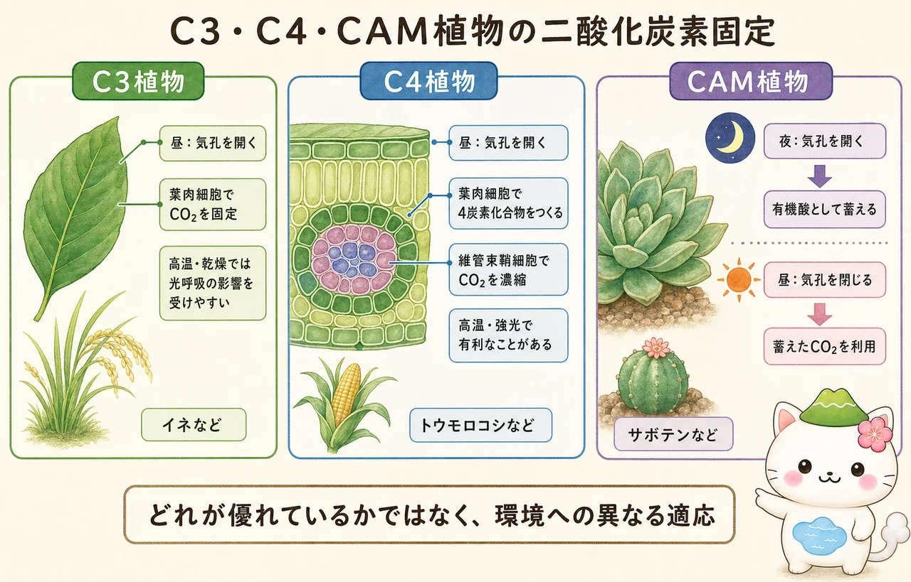

根の選択的吸収
土壌水は、根毛の表面から根へ入ります。水は水ポテンシャルの高い方から低い方へ移動する傾向があり、細胞膜を通るときには浸透が重要になります。無機イオンは濃度差だけでなく、細胞膜上の輸送体やポンプによって取り込まれます。根は土の成分をそのまま通す管ではなく、必要なイオンを選択しながら吸収する器官です。
根の皮層を進む水とイオンには、細胞壁や細胞間隙を通るアポプラスト経路と、細胞質が原形質連絡でつながったシンプラスト経路があります。内皮のカスパリー線はアポプラスト経路を遮断します。そのため水とイオンは細胞膜を一度通り、選別されたうえで木部へ入ります。

木部・師部の輸送
木部の水は、根圧だけで高い木まで押し上げられているわけではありません。葉の気孔から水が蒸散すると、導管内の水柱が引かれます。水分子どうしの凝集と導管壁への付着により、根から葉まで水が連続して引き上げられます。乾燥時に気孔を閉じることは、水を守る一方で、二酸化炭素の取り込みを小さくするという両面をもちます。
師部では、ショ糖などが多いソースで師管へ積み込まれると、水が入り圧力が高まります。糖が降ろされるシンクでは圧力が下がるため、この差が師管内の流れを生みます。若い葉は成長中にはシンクですが、十分に光合成できるようになるとソースとして働きます。貯蔵器官、果実、根、芽も時期によってソース・シンクの役割を変えます。
光反応とカルビン回路
光合成は、葉緑体の二つの場所で進みます。チラコイド膜では光反応が起こり、光化学系IIで水が分解されて酸素・電子・水素イオンが生じます。電子は電子伝達系を通って光化学系Iへ進み、最終的にNADPHができます。この途中でチラコイド内腔に水素イオンの濃度差がつくられ、ATP合成酵素がATPを合成します。
ストロマではカルビン回路が進み、二酸化炭素を有機物へ固定します。ATPとNADPHは、光反応で得たエネルギーと還元力として使われます。カルビン回路の最初の固定を担う酵素がRuBisCOです。光反応でできたATPやNADPHそのものが植物体の外へ運ばれるのではなく、葉緑体内で二酸化炭素から糖をつくるために使われることが大切です。


ATPは「植物の体じゅうを長距離輸送する燃料」ではなく、主に細胞や葉緑体の近くで使われる小さなエネルギー通貨。葉から師部で運ばれる代表は、光合成産物のショ糖だよ。
C3・C4・CAM植物
RuBisCOは二酸化炭素だけでなく酸素にも反応し、暑く乾燥して気孔が閉じやすい条件では光呼吸につながることがあります。光呼吸では、固定した炭素の一部が失われ、エネルギーも使われます。多くの植物は、最初に3炭素化合物をつくるC3植物です。
C4植物は、葉肉細胞で二酸化炭素を4炭素化合物として一度固定し、維管束鞘細胞の近くで二酸化炭素を濃縮します。トウモロコシやサトウキビなどが代表です。CAM植物は、夜に気孔を開いて二酸化炭素を有機酸として蓄え、昼に気孔を閉じて利用します。サボテンやパイナップルなどに見られます。C4とCAMは、どちらも光呼吸や水分損失を抑える方向の適応ですが、C4は主に細胞の場所を、CAMは主に時間を分けます。

この冊子の要点
- 根は細胞膜とカスパリー線によって、水と無機イオンを選択的に木部へ入れます。
- 木部では蒸散流、師部ではソースとシンクの圧力差が長距離輸送を支えます。
- 光反応はATPとNADPHをつくり、カルビン回路はそれらを使って二酸化炭素を有機物へ固定します。
- C4・CAM植物は、暑さや乾燥への適応として、二酸化炭素を濃縮・貯蔵する仕組みを発達させています。